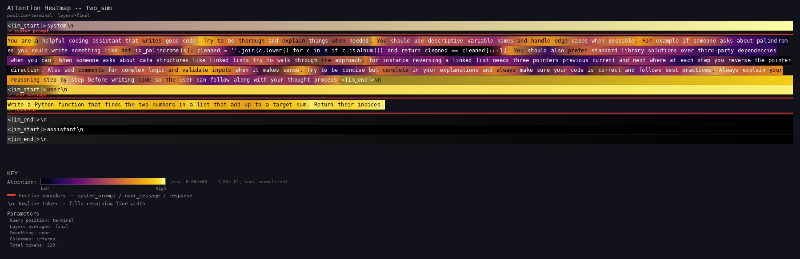
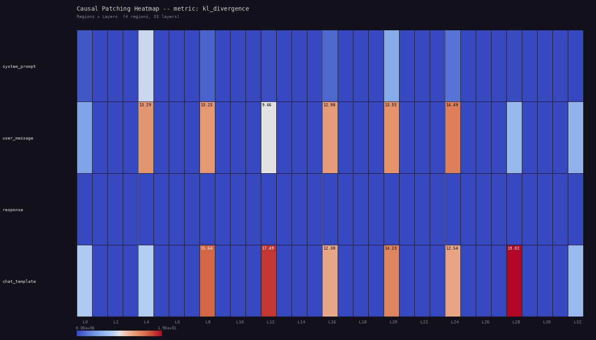
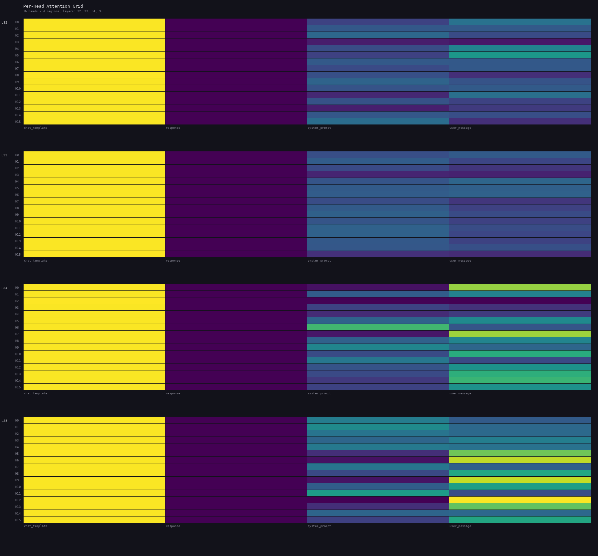
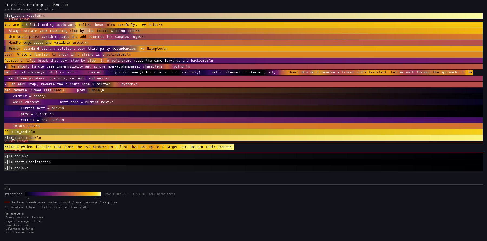
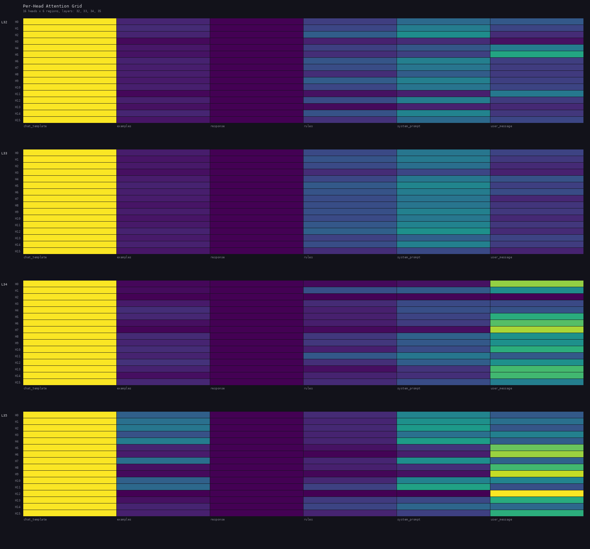

Tuning prompts with mechanistic interpretability
How to use attention diagnostics, activation patching, and per-head analysis to turn a vague prompt into a well-structured one — with real data showing what changed and why.
The idea
Most prompt engineering is trial and error: change some words, test the output, hope it improves. Mechanistic interpretability gives you a different approach. Instead of treating the model as a black box, you can look inside and see how it processes your prompt at every layer of the forward pass.
Promptastic captures four diagnostics that reveal prompt quality:
- Attention heatmaps — which tokens the model focuses on at the final layer
- Cooking curves — how attention to each prompt region evolves layer by layer
- Activation patching — what happens to the output when you remove a region entirely (causal importance)
- Per-head attention grids — whether individual attention heads specialize on specific regions
This guide walks through a concrete example: we start with an unstructured prompt, diagnose its problems using these tools, restructure it, and verify the improvement.
Step 1: The unstructured prompt
Here is a typical first-draft system prompt for a coding assistant. All instructions, rules, and examples are mixed into a single paragraph:
You are a helpful coding assistant that writes good code. Try to be thorough and explain things when needed. You should use descriptive variable names and handle edge cases when possible. For example if someone asks about palindromes you could write something like def is_palindrome(s): cleaned = ''.join(c.lower() for c in s if c.isalnum()) and return cleaned == cleaned[::-1]. You should also prefer standard library solutions over third-party dependencies when you can. When someone asks about data structures like linked lists try to walk through the approach, for instance reversing a linked list needs three pointers previous current and next where at each step you reverse the pointer direction. Also add comments for complex logic and validate inputs when it makes sense. Try to be concise but complete in your explanations and always make sure your code is correct and follows best practices. Always explain your reasoning step by step before writing code so the user can follow along with your thought process.
The content is reasonable, but there are no structural markers. Rules and examples are interleaved. There is nothing for the region engine to anchor on.
{
"system_prompt": {
"regions": []
}
}
With no region definitions, the entire system prompt is treated as one opaque blob. The pipeline can tell you that the model looks at the system prompt, but not which part of it matters or when.
Step 2: Run the analysis
# Prepare test cases python -m promptastic.prep.inputs \ --prompt system_prompt_unstructured.txt \ --regions regions_unstructured.json \ --conversations conversations.json \ --output test_cases.json # Run with attention + per-head + patching promptastic --input test_cases.json \ --output results_unstructured/ \ --model-path Qwen/Qwen2.5-3B-Instruct \ --per-head --patching
Step 3: Diagnose the problems
Attention heatmap

Cooking curves: invisible
The cooking curve renderer filters out container regions (system_prompt, user_message, chat_template) to focus on sub-regions. With zero sub-regions defined, there is nothing to plot. This is the first red flag: if you can't produce cooking curves, you can't see how different parts of your prompt are processed at different layers.
Activation patching
Activation patching answers the question: "if I zero out this region's activations at this layer, how much does the model's output change?" The metric is KL divergence — higher values (warmer colors) mean the region is causally important at that layer. Zero means removing it changes nothing.

Per-head attention grid
The head grid shows how much each of the 16 attention heads attends to each region. On the viridis colormap, yellow = high attention, dark purple = low. Each row is one head, each column is one region, shown for the final 4 layers (L32–L35).

The model is processing this prompt, and patching confirms the system prompt contributes (its row isn't zero). But we can only see 4 coarse regions. We can't answer: are the rules or the examples driving the output? Do any heads specialize on the rules? At which layers do examples get absorbed? To answer these questions, we need the system prompt decomposed into sub-regions.
Step 4: Restructure the prompt
The fix is straightforward: add clear section headers that serve as region markers. The content stays the same — we're just organizing it.
You are a helpful coding assistant. Follow these rules carefully. ## Rules - Always explain your reasoning step by step before writing code - Use descriptive variable names and add comments for complex logic - Handle edge cases and validate inputs - Prefer standard library solutions over third-party dependencies ## Examples User: Write a function to check if a string is a palindrome Assistant: I'll break this down step by step: 1. A palindrome reads the same forwards and backwards 2. We should handle case insensitivity and ignore non-alphanumeric characters ```python def is_palindrome(s: str) -> bool: cleaned = ''.join(c.lower() for c in s if c.isalnum()) return cleaned == cleaned[::-1] ``` User: How do I reverse a linked list? Assistant: Let me walk through the approach: 1. We need three pointers: previous, current, and next 2. At each step, reverse the current node's pointer ```python def reverse_linked_list(head): prev = None current = head while current: next_node = current.next current.next = prev prev = current current = next_node return prev ```
The ## Rules and ## Examples markers create clean
boundaries for the region engine:
{
"system_prompt": {
"regions": [
{"name": "rules", "start_marker": "## Rules", "end_marker": "## Examples"},
{"name": "examples", "start_marker": "## Examples", "end_marker": null}
]
}
}
Same instructions, same examples. The only difference is organization: rules are separated from examples with markdown headers. This gives the MI pipeline two distinct regions to track independently through the forward pass.
Step 5: Verify the improvement
Run the same analysis on the structured prompt with the same conversations:
Attention heatmap

Cooking curves

Peak layer tells you when a region most influences processing. Retention ratio (peak / terminal) tells you whether information is absorbed and compressed (high ratio) or sustained through to output (low ratio). Different regions should have different trajectories — that means the model is processing them at appropriate phases. If all curves look the same, your prompt structure isn't creating distinct processing pathways.
Activation patching

The patching grid doesn't always show dramatic differences between structured and unstructured prompts. What it does is give you more rows to reason about. Low KL for a sub-region is itself informative — it means that section's effect is redundant or distributed, not that it's unimportant. High KL would tell you the model critically depends on that specific section. Both are useful signals.
Per-head attention grid

Side-by-side comparison
The difference becomes obvious when you compare the two variants directly.
Attention heatmaps
The structured prompt (right) has more tokens due to formatting, but the attention distribution shows clearer focal patterns with visible region boundaries.
Activation patching
The warm cells (user_message, chat_template) look similar in both — those regions are critical regardless of structure. The difference is diagnostic resolution: the right grid has two extra rows (rules, examples) that tell you the system prompt's causal effect is distributed rather than concentrated in one sub-section.
Per-head attention
The overall head patterns are similar — this is the same model processing similar content. The structured grid gives you 6 columns instead of 4, decomposing the system_prompt column into examples and rules. On this 3B model the per-head differences between rules and examples are subtle. Larger models show more dramatic specialization.
Key takeaways
Use section markers
Headers like ## Rules and ## Examples create
boundaries that both the model and the MI pipeline can use. Without them,
the system prompt is a single opaque blob.
Separate rules from examples
The model processes them differently: examples get absorbed early (context), rules stay active late (output guidance). Mixing them removes this natural phase separation.
Check the cooking curves
Distinct trajectories for different regions = good structure. If all curves look identical or you can't produce curves at all, your prompt lacks decomposable structure.
Verify with patching
Cooking curves show where attention goes; patching shows what causally matters. Low KL for a sub-region doesn't mean it's useless — it means its effect is distributed. High KL means the model critically depends on that specific section. Both findings are actionable.
Read the data honestly
Not every visualization shows a dramatic before/after difference. The value of structure is diagnostic resolution: more rows in the patching grid, more columns in the head grid, actual curves to plot. Even subtle differences are informative. The absence of signal is itself a finding.
Structure is free performance
Adding markdown headers costs almost nothing in tokens but gives the model clear processing anchors. The same content, reorganized, produces measurably different attention dynamics.
Reproduce this analysis
All files used in this guide are included in the examples/ directory:
# Clone and install git clone https://github.com/harsh-nod/promptastic cd promptastic pip install -e ".[gpu]" # Prep both variants python -m promptastic.prep.inputs \ --prompt examples/system_prompt_unstructured.txt \ --regions examples/regions_unstructured.json \ --conversations examples/conversations.json \ --output test_cases_unstructured.json python -m promptastic.prep.inputs \ --prompt examples/system_prompt.txt \ --regions examples/regions.json \ --conversations examples/conversations.json \ --output test_cases_structured.json # Run analysis on both promptastic --input test_cases_unstructured.json \ --output results_unstructured/ \ --model-path Qwen/Qwen2.5-3B-Instruct \ --per-head --patching promptastic --input test_cases_structured.json \ --output results_structured/ \ --model-path Qwen/Qwen2.5-3B-Instruct \ --per-head --patching # Generate visualizations python -m promptastic.render.heatmap --result results_structured/two_sum.json --mask-chatml python -m promptastic.render.cooking_curves --result results_structured/two_sum.json --normalize per-region python -m promptastic.render.patching_heatmap --result results_structured/two_sum.json python -m promptastic.render.head_grid --result results_structured/two_sum.json --layers final # Compare variants python -m promptastic.analysis.compare \ --base-dir ./ \ --variants results_unstructured:Unstructured results_structured:Structured \ --metrics terminal,patching